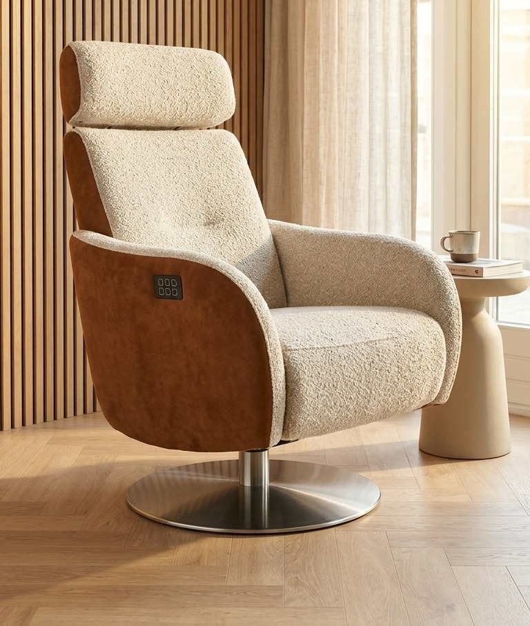
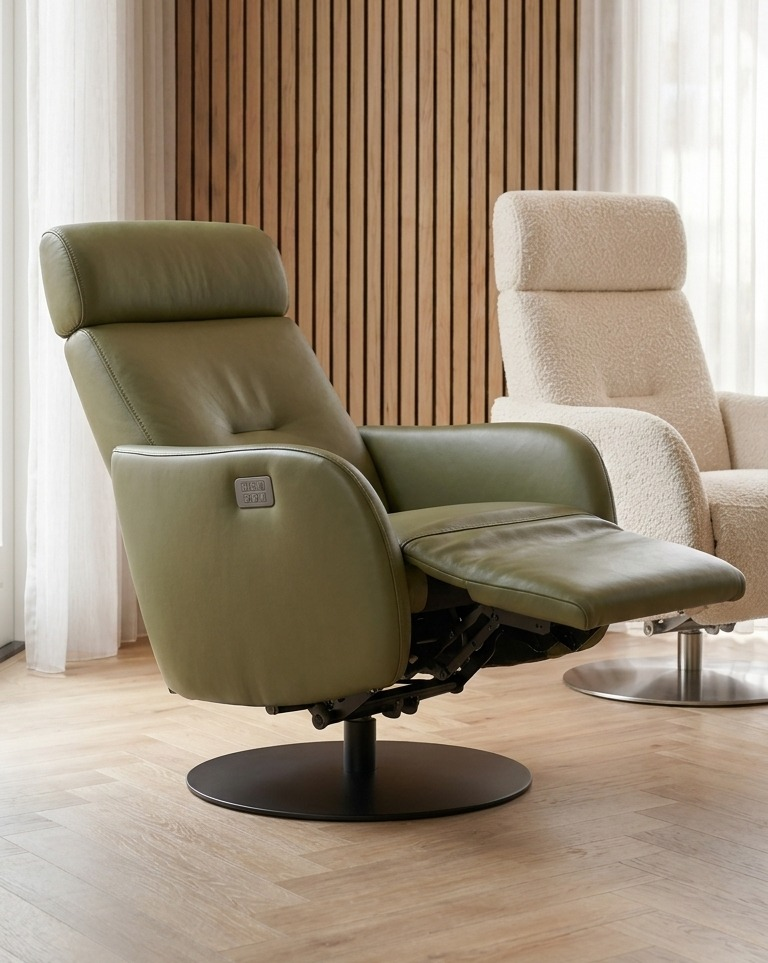
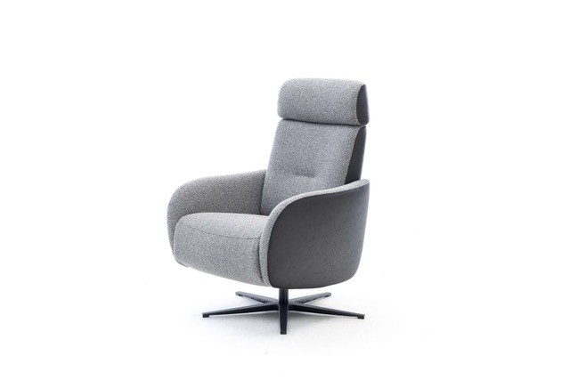
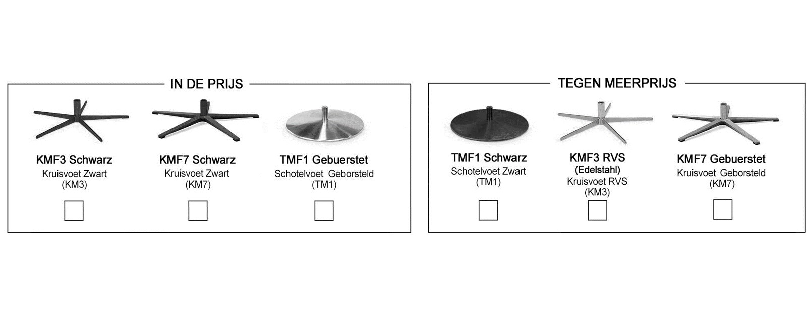
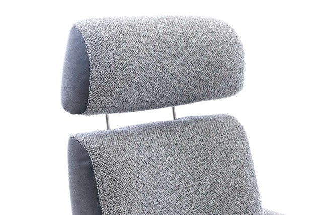
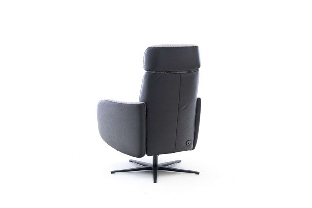
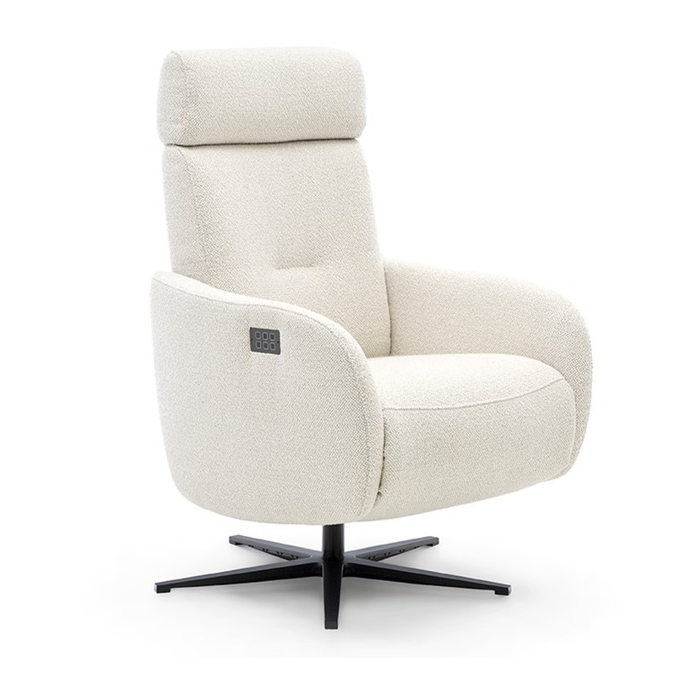

Belangrijkste kenmerken:
- Standaard met onzichtbaar weggewerkte accu & LED-indicator (volledig snoerloos)
- Onafhankelijke motoren met volledige hartbalans-ligstand & automatische draaiblokkering
- Verstelbare hoofdsteun in hoogte én hoek (handmatig of optioneel elektrisch)
- Keuze uit geheel stof, geheel leder of Duo-stoffering (combinatie van 2 materialen/kleuren)
Sta-op stoel René
Onze showroom-René heeft een nieuwe eigenaar gevonden. Zoekt u een vergelijkbare slanke draaifauteuil met sta-op hulp zónder medische uitstraling? Bekijk dan ons actuele designmodel: de DFM Sta-op stoel Carrera (€ 2.490,-) in 5 maten.
Bekijk designmodel DFM Carrera (€ 2.490,-) →Technische specificaties:
Geertjan laat de Sta-op stoel René zien in Dordrecht
Bewegingstechnoloog Geertjan stelt onze Sta-op stoel René persoonlijk aan u voor: een stijlvolle draaifauteuil op accu zonder medische uitstraling, nu tijdelijk met € 350,- voordeel.
✓ 100% snoerloos op accu • 7 maten (XS t/m XL)
Over de Sta-op stoel René
Sta-op stoel René (DFM Design) is een elegante, draaibare designfauteuil met een eigentijds karakter die u helpt veilig op te staan én heerlijk ontspannen te zitten. Dankzij de standaard onzichtbaar weggewerkte accu staat de stoel volledig snoerloos vrij in uw woonkamer (met slimme LED-accu-indicator in de bedieningstoetsen en een subtiel oplaadpunt onderaan de rug).
Ergonomische hartbalans-ligstand (voeten op harthoogte) & veilige Sta-op hulp:
De René is uitgerust met onafhankelijke motoren waarmee u de rugleuning en voetensteun traploos verstelt tot in de zogenaamde hartbalans-ligstand (waarbij uw voeten op gelijke hoogte met het hart liggen voor optimale ontspanning en bloedsomloop). Activeert u de sta-op functie, dan tilt de stoel u rustig omhoog en blokkeert de draaifunctie automatisch.
Verstelbare hoofdsteun & unieke Duo-stoffering (Stof / Leder):
De hoofdsteun is standaard handmatig in hoogte én kantelhoek (microverstelling) aan te passen aan uw nek, en is optioneel ook elektrisch verstelbaar. U heeft keuze uit geheel stof, geheel echt leder óf een stijlvolle duo-combinatie (variant A8/A10) waarbij bijvoorbeeld de binnenkuip in zachte bouclé-stof en de buitenschaal in leder wordt uitgevoerd.
Wilt u deze stoel rustig uitproberen in onze showroom in Dordrecht?
Onze zitspecialisten stellen de stoel direct exact af op uw lichaamslengte en zithouding. Geheel kosteloos en zonder verplichtingen.